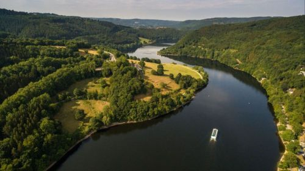

Die Umwelt im Dhampir Projekt
Flora und Fauna im Rheinland und angrenzenden Gebieten
Bei der Vorbereitung des Projektes sichtete ich die Kulturlandschaft der gegenwärtigen Region am deutschen Mittel- und Niederrhein.
Die Umgebung ist geprägt von Großraumregionen des Ruhrgebietes und der Großstädte im Rheintal. In der Region ausserhalb der Städte bildet eine Vielzahl an Wälder, Flüsse, Seen und hügelige Vulkane viel Möglichkeiten zum erkunden, die sich mit Agrarlandschaft und idyllischen Dörfern ergänzen.

Prägend in der heutigen Zeit ist der in den letzten Jahrzehnten Anstieg an zurückkehrenden Wildtieren. So sind in der Umgebung des Rheins und angrenzenden Wäldern wieder Wildkatzen, Wildschweine, Hirsche, Rehe, Füchse und Dachse wieder heimisch geworden. Auch kann man Raubtiere wie Wölfe und Bären als Beute ausserhalb der Städten eingrenzen.
Klima und Geologie im Rheinland

Durch die sich veränderte Durchschnittstemperatur kommt es zu einer Verschiebung der Vegetationszonen. Deswegen und aus anderen Gründen lässt sich eine Verstädterung der Bevölkerung erkennen, was zu einer Überbevölkerung der Großstädte führt.
Dhampir: Die Umwelt

Die Region bietet aber mit ihren ausgedehnten Wäldern und Wiesen viele Möglichkeiten um Storyorte zu entdecken. So kann man aber auch viele Events der Musik und des Brauchtums als Storyevents mit einschließen um die Kultur digital zu erleben. Mit den noch immer heute zu findenden Geheimnissen bittet sich zudem die Möglichkeiten neben Storystandorten in der Welt der Vampire auch andere Punkte einzuschließen. Zu der Vegetation dürfte sich aufgrund der Gegenwartsstory einiges zu finden lassen.
Ziel ist die Natur des Rheinlands spürbar darzustellen und die Kostbarkeit der Natur zu zeigen. Die Welt in Dhampir ist zum Großteil von den heutigen Klimaveränderungen geprägt und enthält viele sehenswerte Punkte und Möglichkeiten der Entdeckung.
In Dampir wird durch die Erkundung der Umgebungen und Beobachtungen das Verständnis für die Natur und zu der der Vampire erweitert.
Letztes Update: 19.09.2025